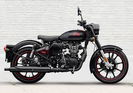
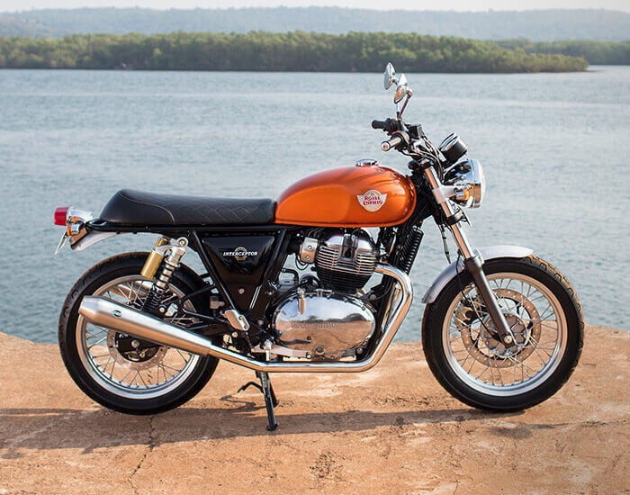

Royal Enfield is an Indian multinational motorcycle
manufacturing company with the tag of "the oldest global
motorcycle brand in continuous production" manufactured
in factories in Chennai in India. Licensed from Royal Enfield
by the indigenous Indian Madras Motors, it is now a subsidiary
of Eicher Motors Limited, an Indian automaker. The company makes classic
looking motorcycles Royal Enfield Bullet, Classic 350, Meteor 350, Classic 500,
Interceptor 650, Continental and many more. Royal Enfield also make adventurous
and offroading motorcycles like Royal Enfield Himalayan. Their motorcycles are equipped
with single-cylinder and twin-cylinder engine.[5] First produced in 1901, Royal Enfield
is the oldest motorcycle brand in the world still in production, with the Bullet model
enjoying the longest motorcycle production run of all time.
Classic 350

An old-school, post-war design built around
an engine that you can count on. That's Classic,
the machine that bears on simple pleasures of
motorcycling, while being dependable enough to
ride through any terrain. In it, the tradition
of an iconic past exists in harmony with modern
technology. Timeless, looking through tomorrow.
Bullet 350
What started in 1932 continues to deliver pure motorcycling experiences across generations of riders. Bullet, the quintessential Royal Enfield, is today the longest running motorcycle in history to be in continuous production. A unique, hand-painted fuel tank, the distinct thump and a standing testimony to Royal Enfield's philosophy of simple design and resilient build make Bullet a living legacy on two wheels.
Interceptor

Inspired by the iconic 60’s Interceptor with its greatest following in the American west coast, fitting perfectly into the easy-going, fun narrative of the time, the new Interceptor 650 Twin reimagines the sun-drenched California beach lifestyle. This modern classic is the essence of a British roadster with a dash of a California Desert Racer blending timeless style and contemporary performance.